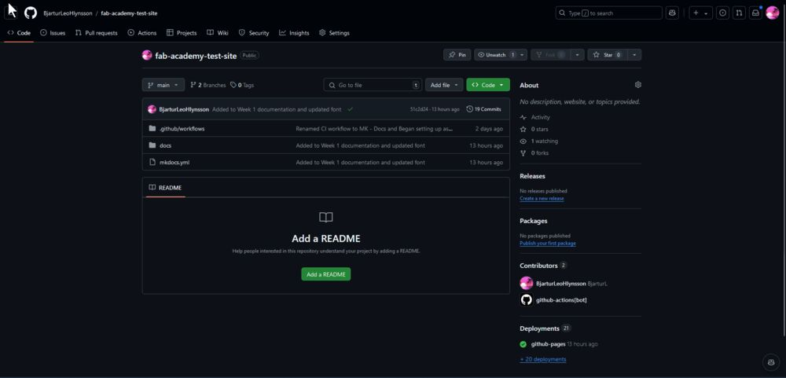
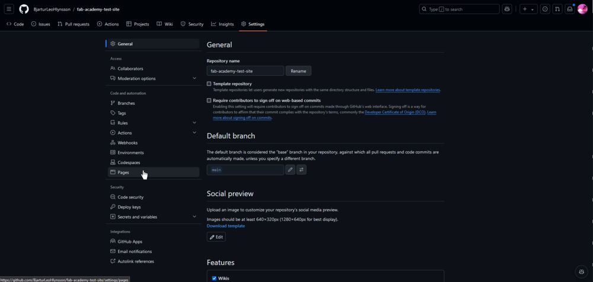
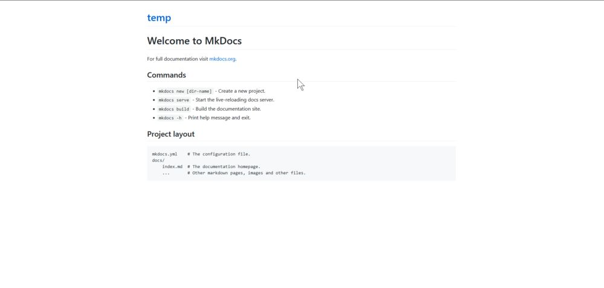
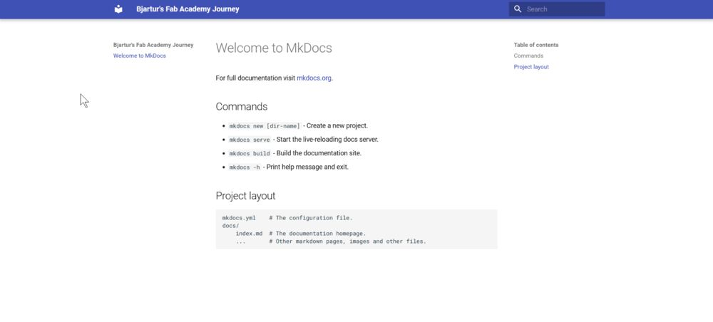

Website Making
Assignment
- Set up a documentation website using GitHub.
- Learn to compress all your images and videos
More information can be found on the  Fab Isa Site.
Fab Isa Site.
Setting Up the Website on GitHub
Instructions and Theme
I followed these instructions provided by my instructor Svavar Konráðsson, which were very helpful in setting up MKDocs. MKDocs is a static site generator that uses Markdown. There are numerous themes available, but I decided to use the Material theme.
To get started, I downloaded the following tools:
VS Code Extensions
In VS Code, I recommend installing Python, Markdown Extension Pack, and YAML. YAML requires a bit more setup to work with MKDocs, which you can find instructions for here inside of the note: Recommended: configuration validation and auto-complete.
After installing these tools, I created a repository on GitHub to store my project and host the website using GitHub Pages. On my machine, I created a folder named 'Code' on my C: drive. Within the 'Code' folder, I created a subfolder to store the website files during development.
After completing the setup, I opened VS Code, navigated to the 'Code' folder, and selected my project folder. Next, I needed to install MkDocs, so I opened the terminal and typed:
This command installed all the necessary dependencies. Afterwards, I typed:
This command created a folder containing all the required resources for MKDocs, which looked like this:
When all that was done, I went into the mkdocs.yml file and typed:
This told MKDocs I wanted to use the Material theme. To check everything was successful, I went into the terminal and typed:
Then I could open my browser and type localhost:8000. That was a local website that I could use to see how my website looks even when coding!
Once I had checked that everything was working, I needed to get the website to GitHub. That was a bit more complicated than I thought, but in the end, it worked. Let's go through how I did that!
To get started, I connected VS Code and Git to my GitHub account. To log in with Git, I needed to open up the terminal and type:
After connecting GitHub to VS Code and logging in with Git, I could finally send my page to my GitHub repository. This was done by pressing Source Control (Ctrl + Shift + G) on the sidebar, which for me looked a little something like this:

Then I just pressed initialize repository in VS Code, chose my repository, and then pressed Commit and finally Sync. My code was now on GitHub. Afterwards, I wanted to get a functional website hosted, so I needed to use GitHub Pages. To begin with, I opened up GitHub, logged in, and opened up my repository. Then I was on this page:

Then I needed to deploy my page using GitHub Pages. To configure Pages, I opened up settings:

In settings, I opened the Pages tab:

There I configured GitHub to use the main branch and told it to use the root folder which didn't work so afterwards I changed it to the docs folder which worked. That looked a little something like this:
Then I pressed save and after around 20 seconds, I reloaded the page and at the top there was a pop-up that looked like this:

Then I could press Visit Site but when I checked the site it looked like this:

Which is not correct so I googled why my page looked like that, I was told that I needed to tell GitHub that this is an MKDocs site. To do that, I followed these instructions, which told me I need to make a GitHub "Action". To make a GitHub Action, I went to the top bar and opened up Actions:
In the Actions tab, I pressed
then I pressed:

Once that was done, I pasted in this code:
name: MK-Docs
on:
push:
branches:
- master
- main
permissions:
contents: write
jobs:
deploy:
runs-on: ubuntu-latest
steps:
- uses: actions/checkout@v4
- name: Configure Git Credentials
run: |
git config user.name github-actions[bot]
git config user.email 41898282+github-actions[bot]@users.noreply.github.com
- uses: actions/setup-python@v5
with:
python-version: 3.x
- run: echo "cache_id=$(date --utc '+%V')" >> $GITHUB_ENV
- uses: actions/cache@v4
with:
key: mkdocs-material-${{ env.cache_id }}
path: .cache
restore-keys: |
mkdocs-material-
- run: pip install mkdocs-material
- run: mkdocs gh-deploy --force
and named it MK-Docs and then to save it I pressed commit.
Then I went back into the settings tab, then pages, and selected gh-pages as my branch and root as my folder so it looked like this:

and then my page looked like this:

Success! I now had a page that anyone can access and a place to document my journey!
Configuring and Personalizing my website
To begin, I opened the mkdocs.yml file and decided to use Svavar Konráðsson's configuration as a base, customizing it to fit my needs. One of the features I added was the ability to switch between light and dark modes using a light bulb icon next to the search bar. Here is the code for that:
theme:
palette:
- media: "(prefers-color-scheme: light)" # Toggle for light mode
scheme: default
toggle:
icon: material/lightbulb
name: Switch to dark mode
primary: black
accent: red
- media: "(prefers-color-scheme: dark)" # Toggle for dark mode
scheme: slate
toggle:
icon: material/lightbulb-outline
name: Switch to light mode
primary: black
accent: red
Next, I changed the font to enhance the readability of the text and code:
I also added several useful Markdown extensions to improve the functionality of the site:
markdown_extensions:
- pymdownx.snippets
- pymdownx.keys
- pymdownx.highlight:
anchor_linenums: true
- pymdownx.inlinehilite
- pymdownx.superfences
- pymdownx.tabbed:
alternate_style: true
- pymdownx.details
- admonition
- attr_list
- md_in_html
- pymdownx.arithmatex:
generic: true
- pymdownx.tasklist:
custom_checkbox: true
After making these and a few other minor adjustments like changing the icons, I was extremely pleased with the final result!
Compressing Images and Video
To get started, I downloaded the following tools:
Installing FFmpeg
There are two ways to install FFmpeg
A) Run this command in the terminal on Windows:
B) Alternatively, you can download the ZIP file from the FFmpeg website linked above.
After installation, I discovered that both FFmpeg and ImageMagick operate without a graphical user interface (GUI), and you must use the terminal to interact with them.
ImageMagick
To batch convert images, I opened the image folder in the terminal by typing CMD in the search box. Then, I used the following command to resize and compress all PNG images:
To convert a single image, I used this command:
Warning
If ImageMagick is not working, check if you are using the right command by replacing convert with magick if you are using either Linux or MacOS
FFmpeg
Similarly, I optimized videos by navigating to the video folder and typing CMD to open the terminal. I then ran the following command, which can be found on Svavar's Site:
ffmpeg -i input_video.mov -vcodec libx264 -crf 25 -preset veryslow -movflags +faststart -vf scale=-2:360 -c:a aac -b:a 128k output_video.mp4
Last Words
This week was very interesting. I learned about how to use Git and GitHub and MKDocs Material which I am loving as a website maker. This week thought me a lot and i am very happy with my website.
Design Files
- None